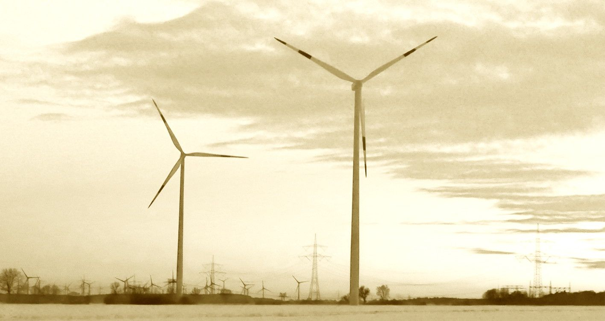

Windkraft

Vor unserer Haustür wird ein vergrößertes Windeignungsgebiet (WEG) ausgewiesen, 20/2015 Kruckow / Alt Tellin ist sein Arbeitstitel.
Auf den Seiten unserer Landesregierung heißt es dazu: Basis der jetzt ausgewiesenen WEG ist der Entwurf der Zweiten Änderung des Regionalen Raumentwicklungsprogramms Vorpommern 2017 als Reaktion auf die Herausforderungen der Energiewende (siehe www.rpv-vorpommern.de). Damit werden aus bisher ausgewiesenen 64 ha nun 131 ha. Wie ist so etwas möglich? Ganz einfach: Man nimmt die Wünsche des späteren Erbauers entgegen und erklärt gestandene Ortsteile bzw. Siedlungen zu „Splittersiedlungen“. Nun erlaubt der Gesetzgeber, die Entfernung zwischen Siedlungs- bzw. Grundstücksgrenzen von 1000 m auf 800 m herunterzusetzen. Das Geschäft des Investors soll natürlich blühen. Also beantragt er gleich noch ein paar Ausnahmen, um an bestimmten Stellen sogar auf 600 m Abstand drücken zu können. So geschehen für Siedenbüssow. Soweit, so schlecht. (Definition: Eine Splittersiedlung ist eine Ansiedlung, welcher mangels einer angemessenen Baukonzentration das für die Annahme eines Ortsteils im Sinne des § 34 BauGB notwendige Gewicht fehlt und die damit Ausdruck einer unorganischen Siedlungsstruktur ist. --> Für Siedenbüssow existiert ein gültiger B-Plan, keine Spur von Außenbereich bzw. Splittersiedlung!!) Unsere Gemeidevertretung hatte sich bereits im Vorfeld durch entsprechende Einwendungen einmütig gegen dieses WEG 20/2015 ausgesprochen. Aber frei nach Karl Marx: bei entsprechend hoher Renditeerwartung wird das Kapital putzmunter. Soll heißen, der Investor lädt zu einem freundlichen Gespräch ein und will uns Starrköpfe mit Hilfe von ein paar billigen Versprechungen von seiner Redlichkeit und dem Gemeinwohl seines Vorhabens überzeugen. Rückständig wie wir sind, glauben wir nur den selbst gewonnenen Erkenntnissen. Und die hießen eben: Mogelpackung, siehe oben. Wer möchte auf seiner Terrasse ständig den Schattenschlag der großen Flügel und das Summen, Knistern erleben? Fragen zu tieffrequentem Infraschall und dessen Auswirkungen auf unser Wohlbefinden, ja direkt die Gesundheit, werden abgeschmettert. Die neuen Türme haben eine Spitzenhöhe (inkl. Flügel) von etwa 215 m. An der Landstraße L35 zwischen Abzweig Daberkow und Bartow stehen bereits 4 davon. Ich war erschrocken, wie nahe an der Straße einer errichtet wurde. Im Winter könnte da wohl Eis von den Flügeln auf der Straße landen?! Auf Initiative von Susanne Wiest bekamen wir aufklärende Hilfe von der Partei „Freier Horizont“, Dr. Ralf Mundkowski und der Umweltexpertin Jana Schuldes. Sie zeigten auf, welche Randbedingungen ein WEG erfüllen muss: z. B. Mindestgröße 35 ha, das wird bei 1000 m Entfernung zu Grundstücksgrenzen schon kritisch. Nester / Horste geschützter Tierarten erfordern einen Freiraum von bis zu 1500 m, auch bei momentan festgestelltem Leerstand. Für uns kommen hierbei die am Tollensetal zu beobachtenden Rot- und Schwarzmilane, sowie Fledermäuse infrage. Kerngebiete des Vogelzuges bedingen einen Abstand von 500 m. Die Einhaltung dieser Randbedingungen wird nicht automatisch überprüft; wir müssen den Investor, ggf. den Planungsverband auffordern, die Rechtmäßigkeit nachzuweisen. Die wichtigste Aussage: Für unseren Landkreis VG kann es wegen Verfahrensfehlern bisher keine verbindlichen Aussagen zu WEG geben! Der Investor will bauen, die Verpächter des zu überbauenden Landes hoffen mit ihm auf Rendite. Und der kleine Bürger – zahlt dann entsprechend dem Erneuerbare Energien Gesetz (EEG) auch für die nicht erzeugte / nicht abgenommene Energie, wenn bei Überangebot die Flügel aus dem Wind gedreht werden. Statt erst in Technologien zum Speichern oder Umwandeln in andere Energieformen zu investieren, sollen weiter sinnlos Spargel ins Land gesetzt werden. Das Landschaftsbild wird versaut, die Stromrechnung steigt! Wem gehört eigentlich heute unsere Heimat?
Ja, wir hatten ´ne Heimat, so schöne. Keiner schützte sie, es ging um Macht und viel Geld. Wer bestimmt nur den Wert dieser Welt?
Die Betreibergesellschaft soll also „Fairwind“ heißen. Dabei hat das Wort „Fair“ eine Doppelbedeutung: eben fair, aber auch „Blond“ - wie blond und blauäugig! Und das wollen wir doch nicht sein. Wir bleiben dran und haben am 3. Mai auf einer gemeinsamen Beratung der Ausschüsse für Gemeindeentwicklung und Kultur im Auftrag der Gemeindevertretung dazu eine Arbeitsgruppe gegründet. Susanne Wiest wird diese leiten. Wer auch Interesse an der Mitarbeit hat, melde sich bitte bei ihr:
susanne.wiest@gmail.com oder Fon 039991 360484.
Günter Hegewald
Das Aktionsbündnis „Freier Horizont“
Unser Aktionsbündnis wurde für den Bereich Mecklenburgische Seenplatte im April dieses Jahres gegründet. Aktueller Anlaß war die gerade laufende Auslegungsphase der Teilfortschreibung „Windkraft“ unseres Regionalen Raumordnungsprogramms. In bislang nicht gekanntem Umfang droht die Verspargelung von gut drei Vierteln unseres Landkreises. Mit dem Grad der Betroffenheit regte sich allerorten Widerstand, doch lange wußte keiner vom anderen. Ich selbst schlage mich mit der Problematik „Windkraft“ bereits seit 1998 herum und mußte in einem leidlichen Erfahrungsprozeß realisieren, daß die herrschende Gesetzgebung und die Praktiken der Behörden und Umweltverbände dem Bürger und selbst den Kommunen in Sachen Windkraftausbau so gut wie keine Einflussmöglichkeiten einräumen, bei eine erfolgten Ausweisung von „Eignungsräumen“ noch gegensteuern zu können. Sie selbst haben mit Ihrem bisherigen Problem der Mega-Tierzuchtanlage ja ähnliche leidvolle Erfahrung machen müssen, wie den Medien zu entnehmen war. Immerhin hatten Sie ja noch eine gewisse Unterstützung von Einrichtungen und Organisationen wie z.B. Naturschutzverbänden zu verzeichne, wieviel es genutzt hat, sei dahingestellt. In Sachen Windkraft werden Sie auf sich allein gestellt bleiben, wenn Sie sich dagegen zur Wehr zu setzen gedenken. Alle etablierten Parteien und auch die Umweltverbände üben sich da in vornehmer Zurückhaltung, ist es doch erklärtes Ziel unserer Landesregierung, Mecklenburg-Vorpommern zu einem „Energieland“ zu machen. Damit nicht genug: Fast das gesamte Binnenland, darunter Ihre Region, sind im aktuellen Entwurf der Landesentwicklungsplanung (LEP) zur Region „mit besonderen demographischen Herausforderungen“ erklärt worden. Einzige noch zugestandene Entwicklungspotentiale: Windkraftnutznung und Landwirtschaft! Die phrasenhaften Lippenbekenntnisse unbeachtet lassend heißt das übersetzt: Diese Regionen, darunter auch Ihre Heimat, sind von den Regierenden faktisch schon aufgegeben worden, einzige Perspektive: Agrarsteppe bestückt mit riesigen Windkraftanlagen, mit Massentierhaltung, Monokulturen - vorzugsweise Energiepflanzen für Biogasanlagen. Einen Vorgeschmack davon haben Sie oder beispielsweise die Einwohner Grapzows bei Altentreptow schon bekommen. Was aber nicht unbedingt heißen muß, daß es nicht noch schlimmer werden kann! Wenn man sich das gefallen läßt. Wir in der Mecklenburgischen Seenplatte sind einen anderen Weg gegangen und erste Erfolge geben uns recht: Unsere vereinten Bürgerinitiativen beginnen, den Widerstand zu koordinieren und wir werden bereits wahrgenommen. Unser Landrat räumte ein, daß dieser Widerstand bisher unbekannten Ausmaßes zu einem Umdenken führen muß. Unser Planungsverband fühlt sich angesichts der Vielzahl an qualifizierten Widersprüchen überfordert mit deren Bearbeitung und mußte Fremdhilfe anfordern, die Teilfortschreibung wird sich deutlich verzögern. Das geplante Zielabweichungsverfahren RH2-PTG bei Altentreptow, das man gemeint hatte, über die Sommermonate durchwinken zu können, ist auf vehementen Widerstand gestoßen und beherrscht seit Wochen die Presse. Wir haben binnen vierzehn Tagen eine Demo in Tützpatz mit gut 500 Teilnehmern hinbekommen - ohne jegliche Unterstützung von außen. Unser Beispiel macht Schule. Im Gebiet des Planungsverbandes Westmecklenburg sind die dortigen ebenso zahlreichen Bürgerinitiativen dabei, sich unserem Bündnis anzuschließen. Wir laden auch Sie dazu ein! Wir wollen solange Druck machen, bis die Verantwortlichen sich bereit finden, endlich die Spielregeln zu ändern: - Kommunale Entscheidungshoheit über die Ausweisung von „Eignungsgebieten“ zur Windkraftnutzung (und z.B. Tierhaltungsanlagen) - Festlegung von fachlich nachvollziehbaren Abstandsregel- ungen zur Wohnbebauung, zu Natur- und Landschaftsschutz- gebieten und zu Baudenkmalen - Ermittlung und Entschädigung von Wert- und Einkommens- verlusten durch Windkraftanlagen - Rückbau von Anlagen, die den Kriterien nicht entsprechen - sofortige Aussetzung der Teilfortschreibung Windkraft, sowie von Zielabweichungsverfahren, solange obige Forderungen nicht erfüllt sind Es geht uns um nichts weniger, als den Erhalt unserer Heimat, wie es unserem Grundverständnis entspricht: Lebenswert trotz vielleicht „etwas“ dünnerer Besiedlung als im Ruhrgebiet (aber noch immer deutlich dichter als in Schweden) mit weitgehend intakter Natur und Landschaft. Mit freien Horizonten! Sie sind ja bereits kampferprobt, Resignation ist nicht angesagt. Wer nicht kämpft, hat schon verloren. Gemeinsam können wir es schaffen!Mit freundlichen Grüßen Norbert Schumacher (Vorsitzender des Aktionsbündnisses gegen unkontrollierten Windkraftausbau - Freier Horizont)